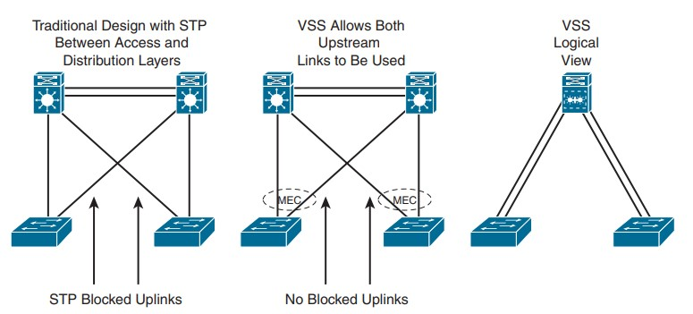
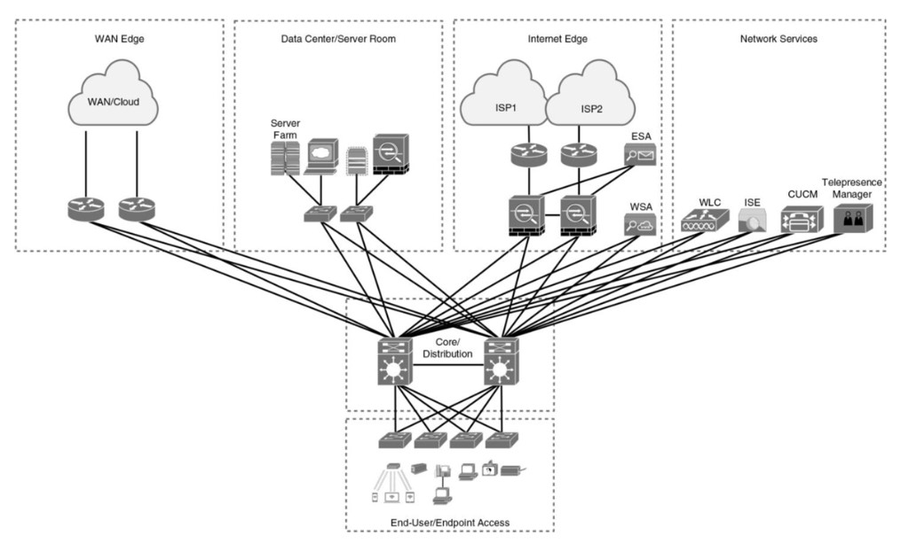
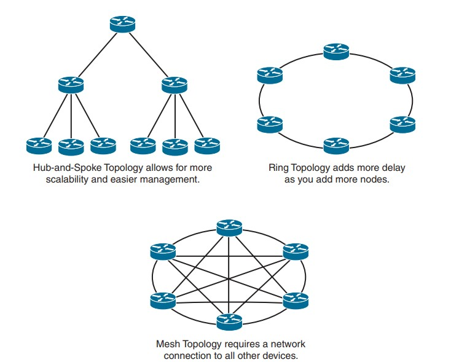
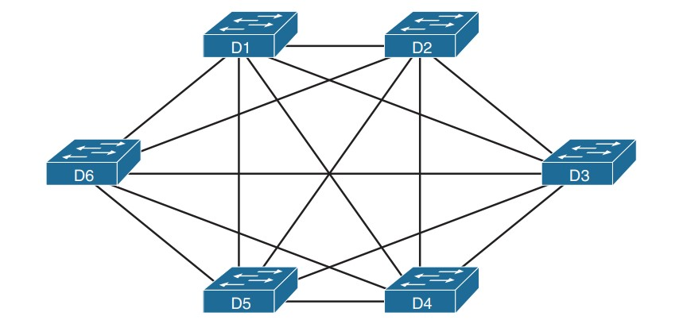

Exemples de Modèles Hiérarchiques
Le modèle hiérarchique (ou land design) peut être implémenté de deux manières pour concevoir un réseau de campus : la conception traditionnelle en commutation (Switched Hierarchical Design) ou la conception en réseau routé (Routed Hierarchical Design).
Comparaison entre les deux approches
| Caractéristique | Switched Hierarchical | Routed Hierarchical |
|---|---|---|
Description générale |
Principalement commutation Ethernet pour réseaux de couche 2. | Commutation de couche 3 centrée sur la couche d'accès. |
Recommandation |
Utilise des liens de couche 3 (Layer 3 links) pour la redondance. | Équilibre la charge (load balancing) dès la couche d'accès. |
Rôle de la couche de distribution |
Sépare les couches 2 et 3. Achemine les communications inter-VLAN. L’agrégation (ou summarization) de routes | Pas de rôle spécifique de couche de distribution. |
Inconvénient majeur |
Manque d'équilibrage de charge ("Spanning Tree" permet uniquement à l'un des liens redondants) | N/A. |
Avantage clé |
N/A. | Équilibrage de charge dès la couche d'accès et facilité du routage. |

Virtual Switching System (VSS)
Le Virtual Switching System (VSS) est une solution qui assure la redondance entre les commutateurs d'accès et de distribution. Il combine deux commutateurs de distribution physiques en un seul commutateur logique.
Note
VSS éliminant le besoin d'utiliser des protocoles de redondance comme le Spanning Tree Protocol (STP), le Hot Standby Router Protocol (HSRP), le Virtual Router Redundancy Protocol (VRRP) et le Gateway Load Balancing Protocol (GLBP).
| Avantages | Description |
|---|---|
Commutation de couche 3 vers la couche d'accès |
Améliore la continuité des communications en utilisant 'Layer 3 switchin" vers la couche d'accès. |
Gestion simplifiée d'une configuration unique |
Simplifie la gestion grâce à une configuration unique du commutateur de distribution VSS. |
Meilleur retour sur investissement (ROI) |
Augmente la bande passante entre la couche d'accès et la couche de distribution, offrant un meilleur ROI. |
Multichassis EtherChannel (MEC) |
Crée des technologies sans boucle et élimine le besoin du protocole Spanning Tree. |

2-Tier (Collapsed Core)
Une alternative à la hiérarchie à trois couches est la conception "collapsed core", qui est une hiérarchie à deux couches utilisée dans les réseaux plus petits ou les environnements où une conception à trois couches complète n'est peut-être pas nécessaire.
Note
Cette conception est généralement utilisée dans des scénarios tels qu'un seul bâtiment avec plusieurs étages. les couches de core et distribution sont fusionnées en une seule couche.

Hub-and-Spoke
La conception du réseau en étoile (Hub-and-Spoke) offre des temps de convergence plus rapides que la topologie en anneau (ring topology). De plus, la conception en étoile est plus évolutive et plus facile à gérer que les topologies en anneau ou maillées (mesh).
Par exemple, la mise en oeuvre de politiques de sécurité dans une topologie maillée complète (full-mesh topology) deviendrait difficile à gérer, car nous devrions configurer des politiques à chaque emplacement. En utilisant la formule n(n - 1)/2, un mesh de 8 appareils générerait 8 (8 - 1)/2 = 56/2 = 28 liens, ce qui peut devenir difficile à gérer en termes de complexité et de maintenance.
Note
La conception du réseau en étoile est souvent préférée dans de nombreuses situations en raison de sa facilité de gestion, de sa rapidité de convergence et de son évolutivité par rapport à d'autres topologies comme l'anneau ou le maillage.

Full-Mesh
Dans une topologie de maillage complet (Full-Mesh), chaque appareil serait connecté à chaque autre appareil, créant un réseau hautement interconnecté. Cela offre une grande redondance et des itinéraires de communication multiples, mais cela peut devenir complexe et coûteux à mesure que le réseau s'agrandit.
| Appareil | Liaisons Directes |
|---|---|
| A | B, C, D |
| B | A, C, D |
| C | A, B, D |
| D | A, B, C |
Les avantages d'une topologie de maillage complet comprennent une redondance maximale. Cependant, il y a des inconvénients à cette approche. Le principal inconvénient est la complexité et le coût associés au câblage et à la gestion de nombreuses liaisons directes, en particulier dans les réseaux de grande taille. De plus, la configuration et la maintenance d'une topologie de maillage complet peuvent devenir fastidieuses à mesure que le nombre d'appareils augmente.

Partial Mesh
En contraste, une topologie de maillage partiel (Partial Mesh) est une configuration où certains appareils ne sont pas directement connectés à tous les autres. Autrement dit, un maillage qui n’est pas un maillage complet.
Note
Les réseaux réels utilisent ces idées de topologie, mais il est courant qu'ils les combinent : Conception hybride, intégrant des concepts topologiques dans une architecture plus étendue, généralement plus complexe.